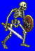
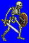
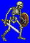
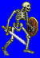

Height: 2 meters Weight: 25 lbs.
Habitat: Battlefield, ghost ship, cave Origin: Europe
Meaning: English word "skeleton"
A walking conglomeration of bones. Typically soldiers in life and revived with necromancy, they usually still carry memories of their former lives, in the form of weapons, armor, and the desire for vengeance upon their killers. Skeletons often have no wills of their own, and require constant direction by a puppeteer. They are often seen guarding important people and treasures in hordes. Because it is composed of bone, swords are generally ineffective as opposed to blunt attacks.
See also: Ghoul, Wight, Zombie, Necromancer